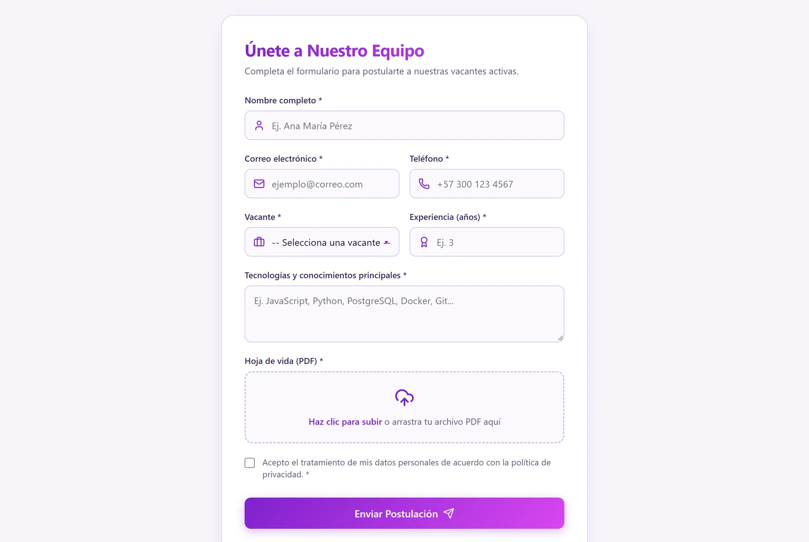

El formularioThe form
Donde empieza la postulaciónWhere an application starts
El candidato elige la vacante, deja sus datos y sube su hoja de vida en PDF. Al enviarla, el workflow de n8n la recibe y la evalúa.
The candidate picks the vacancy, fills in their details and uploads a PDF résumé. On submit, the n8n workflow receives it and evaluates it.
